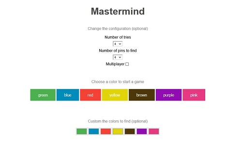
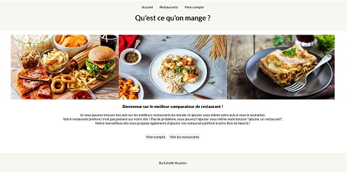
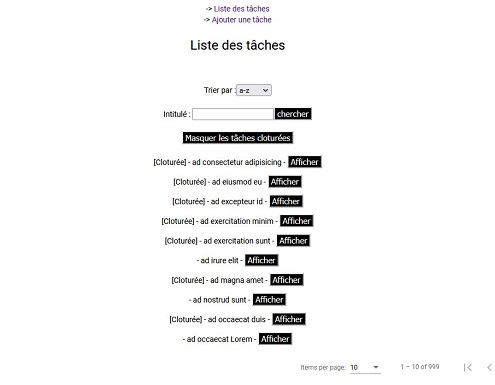

Projects
Click on the game to start playing. You can change the settings (numbers of color to find, number of tries, colors, etc) and if you want to start playing directly, simply choose your firsts colors and press enter when the button is display. This was my first project in angular, I'm happy about it even if I would do it a lot differently today. FIrst of all, I would use services instead of way to many input/output. (But we haven't studied the services at the time) Enjoy your game ! Click to play mastermind
Click on the game to start playing. You can change the settings (numbers of color to find, number of tries, colors, etc) and if you want to start playing directly, simply choose your firsts colors and press enter when the button is display. This was my first project in angular, I'm happy about it even if I would do it a lot differently today. FIrst of all, I would use services instead of way to many input/output. (But we haven't studied the services at the time) Enjoy your game ! Click to play mastermind
Click on the game to start playing. You can change the settings (numbers of color to find, number of tries, colors, etc) and if you want to start playing directly, simply choose your firsts colors and press enter when the button is display. This was my first project in angular, I'm happy about it even if I would do it a lot differently today. FIrst of all, I would use services instead of way to many input/output. (But we haven't studied the services at the time) Enjoy your game ! Click to play mastermind
Contact
If you want an english version of my resume, please contact me at estellehuynen@outlook.be
If you have any feedback about my webiste or my projects, please don't hesitate to contact me ! I would be happy ...